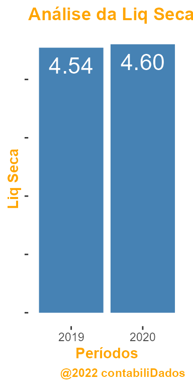

The data contained in the exampleRPackage R package was analyzed exactly like detailed in this document.
First, because the data is contained in a package, we can easily call it from R
## 'data.frame': 40 obs. of 35 variables:
## $ empresa : chr "alpha" "alpha" "alpha" "alpha" ...
## $ ano : int 2018 2019 2020 2021 2018 2019 2020 2021 2018 2019 ...
## $ cxEquiv : int 85458 100637 203376 95156 421335 568814 1224363 757656 365390 1722906 ...
## $ ctaRecCP : int 138707 149828 217025 286420 1381804 1577020 1354742 1900299 743523 1056464 ...
## $ estoque : int 54674 65053 105426 163265 335889 381185 377970 461206 1018487 1377831 ...
## $ outAtvCirc : int 26318 39893 41311 51985 223822 194472 196354 81982 196573 496682 ...
## $ atvCirc : int 305157 355411 567138 596826 2362850 2721491 3153429 3201143 2323973 4653883 ...
## $ ctaRecLP : int 3885 3769 929 1549 0 0 0 0 2743 6103 ...
## $ investim : int 1204 1093 1093 1037 64591 62240 60184 60140 111792 110570 ...
## $ Imobilizado : int 30153 110205 114633 146369 682707 1008870 934008 902397 273355 1214281 ...
## $ intangivel : int 24342 27198 300759 367825 68181 106919 175304 263977 217024 560165 ...
## $ outAtvNaoCirc : int 13998 14511 42016 106414 616978 667876 688096 819600 259220 627662 ...
## $ atvNaoCirc : int 73582 156776 459430 623194 1432457 1845905 1857592 2046114 864134 2518781 ...
## $ fornec : int 39909 48914 144673 208287 188373 229017 374609 379173 1487819 2150913 ...
## $ dividasCP : int 15938 57342 86793 180071 263467 297816 471845 499893 47383 3612 ...
## $ outPasCirc : int 36892 62145 98849 162156 975028 1067995 994815 1326389 417729 745766 ...
## $ pasCirc : int 92739 168401 330315 550514 1426868 1594828 1841269 2205455 1952931 2900291 ...
## $ dividasLP : int 24441 8176 143078 13675 513191 726197 1008744 796431 117867 304019 ...
## $ outrPasNaoCirc: int 3755 65220 64417 78857 68831 352879 339003 336587 282704 1226676 ...
## $ pasNaoCirc : int 28196 73396 207495 92532 582022 1079076 1347747 1133018 400571 1530695 ...
## $ patLiq : int 257804 270390 488757 576973 1786417 1893492 1822005 1908784 834605 2741678 ...
## $ atvTotal : int 378739 512188 1026568 1220021 3795307 4567396 5011022 5247258 3188108 7172665 ...
## $ receitaLiq : int 553290 608587 576606 1059651 2606735 2829785 2263442 2617094 5650276 7207181 ...
## $ custo : int 295729 327460 302902 502003 914589 1044094 1117939 1208033 4005827 5194318 ...
## $ despVenda : int 137328 153798 192065 320527 1130493 1228732 842806 912860 995727 1248212 ...
## $ despAdm : int 51052 66689 58796 114603 298241 334842 371561 421942 275378 430757 ...
## $ outDespOp : num 5651 6615 7526 13054 42862 ...
## $ despOper : num 194031 227102 258387 448184 1471596 ...
## $ recFin : int 14510 8959 23749 15358 197954 70457 39938 57413 48538 232280 ...
## $ despFin : int 22223 15546 37358 38796 60612 104952 101245 130058 155339 257799 ...
## $ ir_csll : int 9913 15506 2165 21793 200553 43386 -62853 -87707 68654 107392 ...
## $ depreciacao : int 14816 29110 29393 38325 105547 185291 189963 199321 59324 176489 ...
## $ cxAtivOper : int 42706 74253 79846 87682 101021 215916 503918 11031 448009 -1206695 ...
## $ cxAtivInvest : int 26179 -30954 -107741 -3904 -134601 -197250 -46837 -56812 -142834 -336538 ...
## $ cxAtivFinanc : int -69786 -41418 36767 -84630 162756 45223 260122 -387737 -237629 1436919 ...We drew a boxplot:
## -- Attaching packages --------------------------------------- tidyverse 1.3.1 --## v ggplot2 3.3.5 v purrr 0.3.4
## v tibble 3.1.6 v dplyr 1.0.8
## v tidyr 1.2.0 v stringr 1.4.0
## v readr 2.1.2 v forcats 0.5.1## Warning: package 'tibble' was built under R version 4.1.2## Warning: package 'tidyr' was built under R version 4.1.3## Warning: package 'readr' was built under R version 4.1.3## Warning: package 'dplyr' was built under R version 4.1.3## -- Conflicts ------------------------------------------ tidyverse_conflicts() --
## x dplyr::filter() masks stats::filter()
## x dplyr::lag() masks stats::lag()
## $Contas
## # A tibble: 8 x 3
## conta `2019` `2020`
## <chr> <dbl> <dbl>
## 1 cxEquiv 8 10
## 2 estoque 150 200
## 3 ctaRecCP 400 300
## 4 outAtvCirc 1 3
## 5 fornec 50 20
## 6 dividasCP 30 40
## 7 outPasCirc 10 8
## 8 atvTotal 900 800
##
## $Índicee
## # A tibble: 1 x 3
## conta `2019` `2020`
## <chr> <dbl> <dbl>
## 1 Liq Seca 4.54 4.60
##
## $`Análise Vertical``
## # A tibble: 7 x 3
## conta `2019` `2020`
## <chr> <chr> <chr>
## 1 AV.cxEquiv 0.89% 1.25%
## 2 AV.Estoque 16.67% 25.00%
## 3 AV.ctaRecCP 44.44% 37.50%
## 4 AV.outAtvCirc 0.11% 0.38%
## 5 AV.fornec 5.56% 2.50%
## 6 AV.dividasCP 3.33% 5.00%
## 7 AV.outPasCirc 1.11% 1.00%
##
## $`Análise Horizontal``
## # A tibble: 7 x 2
## conta `2020`
## <chr> <chr>
## 1 AH.CxEquiv 25.00%
## 2 AH.Estoque 33.33%
## 3 AH.ctaRecCP 25.00%
## 4 AH.outAtvCirc 200.00%
## 5 AH.fornec 60.00%
## 6 AH.dividasCP 33.33%
## 7 AH.outPasCirc 20.00%